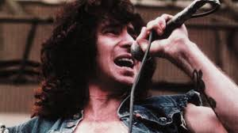

High Voltage (Versão Australiana)
- High Voltage é o primeiro álbum da banda australiana de hard rock AC/DC, lançado em 17 de Fevereiro de 1975 apenas na Austrália. O primeiro lançamento internacional em 1976 também seria chamado - High Voltage , embora com uma lista de faixas radicalmente diferente.
Em novembro de 1973, os guitarristas Malcolm Young e Angus Young formaram o AC/DC e recrutaram o baixista Larry Van Kriedt, o vocalista Dave Evans e Colin Burgess, ex- baterista do Masters Apprentices. Logo os irmãos Young decidiram que Evans não era um vocalista adequado para o grupo; eles achavam que ele era mais um roqueiro glam como Gary Glitter. A banda gravou apenas um single com Evans, "Can I Sit Next To You Girl". Em setembro de 1974, Ronald Belford "Bon Scott", um experiente vocalista e amigo do produtor George Young, substituiu Dave Evans. A adição de Scott redefiniu a banda; assim como os irmãos Young, Scott nasceu na Escócia antes de emigrar para a Austrália na infância e amava o rock and roll, especialmente Little Richard. Em uma entrevista de 2010 para Mojo's Sylvie Simmons, Angus Young lembrou que Scott "moldou o caráter do AC/DC... Tudo se tornou mais realista e direto. Foi quando nos tornamos uma banda".
- High Voltage foi originalmente lançado pela Albert Productions apenas na Austrália, e nunca foi relançado por outra gravadora neste formato. A versão internacional de High Voltage, que foi lançada pela Atlantic Records em 1976, tem uma capa e lista de faixas diferentes, com apenas "She Got Balls" e "Little Lover" aparecendo no álbum. "Stick Around" (sobre a incapacidade de Scott de se segurar em uma amante por mais de uma noite) e "Love Song" foram relançados na - Backtracksem 2009. O título e a arte foram sugestão de Chris Gilbey, da Albert Productions. Na biografia de Scott de 1994, "Highway to Hell", Gilbey explica que É tão manso agora, mas naquela época pensávamos que era bastante revolucionário".
O album foi gravado em Novembro de 1974 e teve seu Lançamento em 17 de Fevereiro de 1975;
O album atingil certificação:
| Nivel | Albuns Vendidos |
| 5X Platina | + 350.000 (Austrália) |
Gênero(s):
- Hard rock
- Blues
- Rock
- Rock and Roll
Duração do album: 39 min 51 seg
Gravadora(s): Albert Productions
Produção: Harry Vanda e George Young
 Angus McKinnon Young (31 de março de 1955) é um guitarrista e compositor, conhecido por ser guitarrista solo, compositor, líder e co-fundador da banda AC/DC.
Angus McKinnon Young (31 de março de 1955) é um guitarrista e compositor, conhecido por ser guitarrista solo, compositor, líder e co-fundador da banda AC/DC.
No ano de 2003, foi introduzido juntamente com outros membros do AC/DC no Rock and Roll Hall of Fame.
Foi considerado o 24.º melhor guitarrista de todos os tempos pela revista norte-americana Rolling Stone.
 Malcolm Mitchell Young (6 de janeiro de 1953 — 18 de novembro de 2017) foi um guitarrista e compositor escocês naturalizado australiano e fundador, junto com seu
irmão mais novo Angus Young, do AC/DC, da qual era o guitarrista rítmico, vocalista de apoio e compositor.
Malcolm Mitchell Young (6 de janeiro de 1953 — 18 de novembro de 2017) foi um guitarrista e compositor escocês naturalizado australiano e fundador, junto com seu
irmão mais novo Angus Young, do AC/DC, da qual era o guitarrista rítmico, vocalista de apoio e compositor.
Em 2014 Malcolm Young afastou-se da banda por estar sofrendo de demência. Morreu aos 64 anos.
 Ronald Belford Scott ( 9 de julho de 1946 — 19 de fevereiro de 1980) foi um cantor e compositor australiano nascido na Escócia. Ele ficou mundialmente conhecido por
ser vocalista e compositor da banda de rock australiana AC/DC de 1974 a 1980.
Em 2006, a revista Hit Parader colocou Scott como o quinto melhor vocalista de heavy metal de todos os tempos.